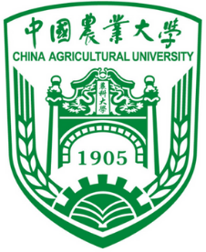

Xiaoyan Li 李笑言
Postdoctoral Researcher · Department of Automation, Tsinghua University · Beijing
I am a machine learning researcher working at the intersection of computational neuroscience and machine learning. I study how brains and foundation models allocate attention and route computation, dual-process (fast/slow) reasoning in large language models, graph neural networks, and multimodal AI for healthcare and the life sciences. At Tsinghua I am mentored by Prof. Yunhao Liu.
I received dual Ph.D. degrees in Computational Mathematics, Science & Engineering and in Environmental Engineering from Michigan State University, advised by Rebecca Lahr, Yuying Xie and Pang-Ning Tan. Our team won first place in the NeurIPS 2021 single-cell multimodal competition.
Education

News
- Sep 2026Five papers accepted at IEEE BIBM 2026: brain multimodal attention, dual-process reasoning in LLMs, theory of mind, network stability under cognitive load, and routing-level signatures of cognitive efficiency. See Projects.
- 2026IACD, an iterative adversarial collaborative detection framework for concealed objects, accepted at ECCV 2026.
- 2026The Temporal Efficiency Paradox accepted at CogSci 2026 (corresponding author).
- 2026Participating in the BabyLM Challenge 2026 (EMNLP 2026), multilingual track (English, Dutch, Chinese).
- 2025Two papers accepted at IEEE BIBM 2025: CareAttenNet and a multi-modal framework for psoriasis diagnosis.
- Mar 2024Joined the Tsinghua University Postdoctoral Innovation & Entrepreneurship Competition.
Research
My long-term goal is to understand intelligence well enough to build it. I am devoting myself to the pursuit of the birth of human-level intelligence; only after that goal is reached can I truly retire. Long way to go.
Current threads of work, with figures, animations and code on the Projects page:
- Brains and foundation models. Encoding models of naturalistic fMRI, sparse routing in Mixture-of-Experts models versus cortical activation sparsity, and whether transformer representations align with the brain's Theory-of-Mind network.
- Reasoning in large language models. Dual-process (System 1 / System 2) behavioural signatures, prompt tuning for cognitive attention, and implications for biomedical decision support.
- AI for biomedicine and the environment. Wearable-sensor activity recognition, multimodal clinical diagnosis, conversational analysis of organoid images, and phone-camera water-quality fingerprinting with the coffee-ring effect.
I love the philosophy of the world and of time, and share the feeling of Heraclitus:
δὶς ἐς τὸν αὐτὸν ποταμὸν οὐκ ἂν ἐμβαίης.
You cannot step into the same river twice.
Publications * corresponding author · view with figures
2026
- IACD: Iterative Adversarial Collaborative Detection via Dual-Perspective Blind Spot DiscoveryXiaoyan Li, Cuicui Jiang, Jiaoping Chen, Rumei YangEuropean Conference on Computer Vision (ECCV), 2026
- The Temporal Efficiency Paradox: Fast Brains React, Slow Brains UnderstandCuicui Jiang, Xiaoyue Ding, Xingyue Liu, Jiaxuan Wei, Xiaoyan Li*Annual Meeting of the Cognitive Science Society (CogSci), 2026
- Apparent Inefficiency, Hidden Optimality: Why the Brain's Multimodal Attention Does Not Track Feature StrengthXiaoyue Ding, Cuicui Jiang, Rumei Yang, Jiaoping Chen, Xiaoyan Li*, Yujia DuIEEE International Conference on Bioinformatics and Biomedicine (BIBM), 2026
- Do Large Language Models Think Fast and Slow? Eliciting Dual-Process Behavioral Signatures with Implications for Biomedical AIXiaoyan Li, Cuicui Jiang*, Jiaoping Chen, Rumei Yang, Yujia DuIEEE BIBM, 2026 (regular paper)
- Attention Mechanisms for Theory of Mind: Weak Brain-Transformer Alignment Despite Behavioral SuccessXiaoyan Li, Cuicui Jiang, Jiaoping Chen*, Rumei Yang, Xingyue Liu, Jiaxuan WeiIEEE BIBM, 2026 (regular paper)
- Network Stability as the Hallmark of Neural Efficiency Under Cognitive LoadXiaoyan Li, Cuicui Jiang, Yujia Du, Jiaxuan Wei, Xingyue Liu, Jiaoping Chen*IEEE BIBM, 2026 (short paper)
- Routing-Level Signatures of Cognitive Efficiency: Only Inter-Subject Routing Consistency Survives FDR, with a Pairwise-Correlation CaveatXiaoyan Li, Cuicui Jiang, Jiaoping Chen, Yujia Du, Jiaxuan Wei, Xingyue Liu, Rumei Yang*IEEE BIBM, 2026 (regular paper)
- Do Foundation Models Think Like Efficient Brains? Comparing Sparse Routing Mechanisms in Biological and Artificial IntelligenceXiaoyan Li et al.Tsinghua Science and Technology, 2026 (under review)
2025
- CareAttenNet: Deep Learning Framework with Temporal Attention for Automated Nursing Activity Recognition from Wearable SensorsXiaoyan Li†, Cuicui Jiang†, Zhiming Jiang, Caihong Li, Zhenzhen Xie, Li Liu, Chuan Song, Zijing Chen* († equal contribution)IEEE BIBM, 2025
- A Multi-modal Deep Learning Framework for Psoriasis Diagnosis by Integrating Unaffected Fingernail Morphology and Clinical IndicatorsXiaoyan Li†, Ruizhen Liu†, Cuicui Jiang†, Zijing Chen, Rebecca Lahr, Yehong Kuang*, Liwen Xu* († equal contribution)IEEE BIBM, 2025
2024
- Leveraging Prompt Tuning-Based Cognitive Attention to Enhance Logical Inference in Large Language ModelsXiaoyan Li, Cuicui JiangACM RMELS Workshop, SenSys, 2024
- Attention as a Driving Force in Large Language Model AdvancementsXiaoyan LiConference on Cognitive Computational Neuroscience (CCN), 2024
- Robust Synthesis of Targeting Glyco-Nanoparticles for Surface Enhanced Resonance Raman Based Image-Guided Tumor SurgeryKunli Liu, AKM Atique Ullah, Aniwat Juhong, Chia-Wei Yang, Cheng-You Yao, Xiaoyan Li, Harvey L Bumpers, Zhen Qiu, Xuefei HuangSmall Science 4(5), 2300154, 2024
Earlier
- Tap water fingerprinting using a convolutional neural network built from images of the coffee-ring effectXiaoyan Li, Alyssa R Sanderson, Selett S Allen, Rebecca H LahrAnalyst 145(4), 1511–1523, 2020
- Preparation of palladized carbon nanotubes encapsulated iron composites: highly efficient dechlorination for trichloroethylene and low corrosion of nanoironX Wang, W Wang, G Lowry, X Li, Y Guo, T LiRoyal Society Open Science 5(6), 172242, 2018
Preprints
- Optimal environmental condition for contaminants separation by coffee-ring effectXiaoyan Li
- CNN-Vision-transformer model for elements concentration estimation by coffee-ring effect residue patternsXiaoyan Li
Experience
- 2024.03 – presentPostdoctoral Researcher · Department of Automation, Tsinghua University, Beijing · mentor Dr. Yunhao Liu
- Research at the intersection of computational neuroscience and machine learning for healthcare: multimodal medical data fusion, LLM reasoning, deep learning model design.
- First author of five IEEE BIBM 2026 papers; corresponding author of a CogSci 2026 fMRI study of the cortical temporal hierarchy on about 65 hours of naturalistic movie data.
- Proposed IACD, an iterative adversarial detection framework that mines the blind spots of frozen detectors (ECCV 2026).
- Developed CareAttenNet and a multi-modal psoriasis diagnosis framework (both IEEE BIBM 2025); built a prompt-tuning + RAG framework that raised GPT-4 accuracy on the Criteria Cognitive Aptitude Test from 75.0% to 81.2%.
- 2023.07 – 2024.02Postdoctoral Researcher · Michigan State University · mentor Dr. Yuying Xie
- AI-driven systems integrating deep learning with industrial manufacturing data: multimodal modeling, real-time data cleaning, intelligent optimization.
- Model generalizability, interpretability and robustness for production-level industrial data analysis.
- 2022.01 – 2023.02Software Developer · Lucy Labs, New York · mentor Jakub Rehor
- Quantitative trading algorithms combining statistical arbitrage and momentum strategies; automated data pipelines on Google Cloud BigQuery; distributed ML workflows on AWS with Ray and Kubernetes.
- 2022.05 – 2022.11Research Intern · Huawei, Santa Clara
- Scene-graph generation and vision-transformer modules for object detection, layout and image generation; data pipelines over Visual Genome (108k images) and COCO (330k images).
- 2021.05 – 2022.05Research Intern · Xie's AI Lab, Michigan State University
- Heterogeneous graph neural network for batch-effect removal in single-cell sequencing with gene-pathway message passing; multi-dataset multi-task learning cut protein-expression RMSE from 1.19 to 0.51.
- 2018.05 – 2023.07Project Leader, Water Contaminants Quantification · Michigan State University
- Transformer-U-Net model that quantifies tap-water contaminant concentrations from phone images (625 nanochromatography images, 4,200 EDS maps); cut analysis cost from hundreds of dollars to $1 and time from days to seconds.
Awards
- 1st Place, NeurIPS 2021 Single-cell Multimodal Analysis Competition (Team DANCE): first GNN to predict RNA expression from chromatin accessibility; lowest overall RMSE (0.2835) among all teams. 2021/11
- PhD Dissertation Completion Fellowship, College of Engineering, Michigan State University. 2020/12
- EPA Environmental Science Lahr Innovation Award, Michigan State University. 2017/09
- Second Prize, “A low cost and fast tap water quality test method: Coffee Ring Effect”, Michigan State University. 2016/11
Patents Chinese invention patents, filed (申请受理)
- Embodied-intelligence-based liquid sampling method, apparatus, platform and electronic device (基于具身智能的液体采样方法、装置、平台及电子设备)Xiaoyan Li, Li Liu, Yunhao Liu, Zheng Yang, Jiliang WangCN 202510960606.8 · filed July 2025
- Reverse-thinking-based poppy identification method, apparatus, device and storage medium (基于反转思维的罂粟识别方法、装置、设备和存储介质)Xiaoyan Li, Hanqi Feng, Li Liu, Yunhao Liu, Zijuan LiuCN 202511713099.4 · filed November 2025 · under substantive examination
- Biomimetic tactile sensing method, system, apparatus and device for embodied intelligence (用于具身智能的仿生触觉感知方法、系统、装置和设备)Xiaoyan Li, Yunhao LiuCN 202511551673.0 · filed October 2025
- Mechanical feedback method, system, apparatus and device for embodied intelligence (用于具身智能的力学反馈方法、系统、装置和设备)Xiaoyan Li, Yunhao LiuCN 202511551665.6 · filed October 2025 · under substantive examination
- Wide-range pressure sensing method and system for embodied intelligence (应用于具身智能的宽量程压力感知方法和系统)Yunhao Liu, Xiaoyan LiCN 202511551671.1 · filed October 2025
Teaching
Teaching Assistant, Department of Automation, Tsinghua University
- 2024 Spring: Artificial Intelligence of Things (AIoT)
Teaching Assistant, Lyman Briggs College & College of Engineering, Michigan State University
- 2016 Fall: LB 171L Introductory Chemistry Laboratory I
- 2017 Spring: LB 172 Principles of Chemistry II
- 2017 Fall: LB 171L Introductory Chemistry Laboratory I
- 2018 Spring: LB 172 Principles of Chemistry II
- 2018 Fall: LB 171L Introductory Chemistry Laboratory I
- 2019 Spring: LB 172 Principles of Chemistry II
- 2019 Fall: LB 171L Introductory Chemistry Laboratory I
- 2020 Spring: LB 172 Principles of Chemistry II
- 2020 Fall: LB 171 Principles of Chemistry I
- 2021 Spring: LB 172 Principles of Chemistry II
- 2021 Fall: EGR 102 Introduction to Engineering Modeling
- 2022 Spring: EGR 102 Introduction to Engineering Modeling
Academic Service
- Reviewer awardICML 2026 Gold Reviewer Award · top 25% of reviewers, as judged by area chairs and program chairs
- Conference reviewingProgram Committee / Reviewer
- AAAI 2027 (Program Committee, Phase 1 and Phase 2)
- NeurIPS 2026 (Reviewer)
- ICML 2026 (Program Committee)
- ICANN 2026 (Reviewer)
- Conference on Cognitive Computational Neuroscience, CCN 2024 and CCN 2025 (Reviewer)
- Journal reviewingReviewer
- Tsinghua Science and Technology
- ACM Transactions on Sensor Networks (TOSN)
- EditorialAssociate Editor Assistant
- ACM Transactions on Sensor Networks (TOSN), 2018
- Communications of the CCF (中国计算机学会通讯), 2021
- MembershipsProfessional societies and technical committees
- IEEE; ACM; Cognitive Science Society
- CCF Technical Committee on Artificial Intelligence and Pattern Recognition; CCF Technical Committee on Internet of Things (committee member)
- American Chemical Society, Division of Computational Chemistry and Division of Environmental Chemistry
Book
From LLMs to AGI: where we are now and what we need to do next (manuscript, in Chinese).
People I Admire
Andrej Karpathy and Mu Li, for their incredible open-source spirit. John Hopcroft and Andrew Yao: in the summer of 2024 I asked Dr. Hopcroft whether pursuing work that interests me, even if it ultimately fails, would be a bad choice; he told me that even if a research project does not succeed, the process itself is valuable and enjoyable, so there is nothing to lose. Edward Witten, who revolutionised my understanding of the physical world around me.